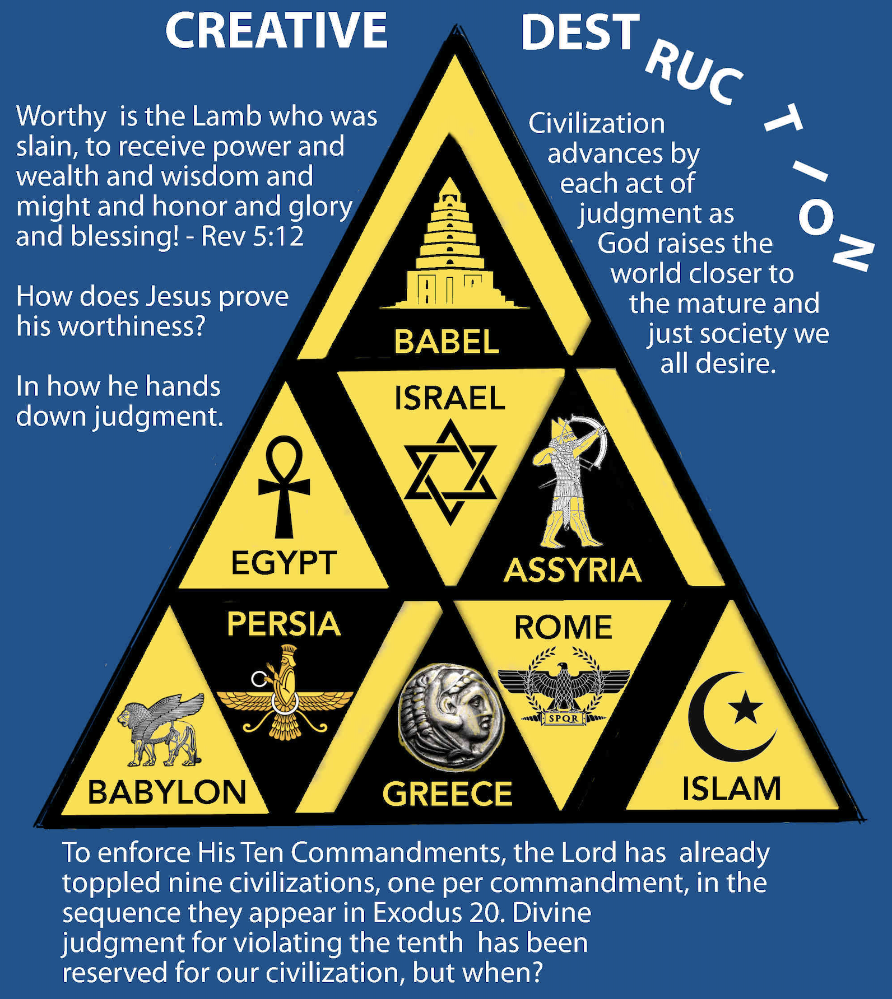
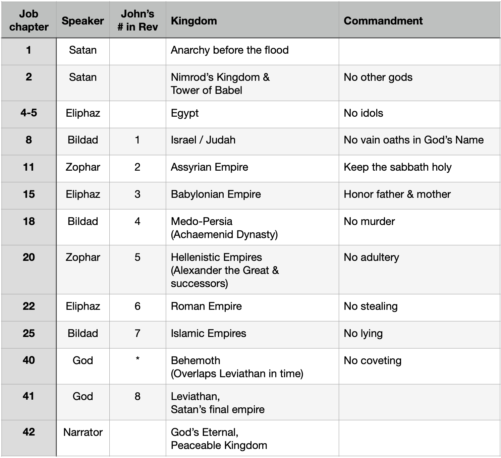

The Meaning of the Beasts of Job
Published on 2024-07-02

This article was originally published as the chapter "The Meaning of the Beasts of Job" in Plague, Precept, Prophet, Peace. It is the second part of a two chapter section that reveals how the Book of Job prophesied the rise and fall of many empires. This part shows that God exercised his judgment against each empire for the breaking of a different commandment. This series of judgments proceeds across time in the same order as the commandments are listed in Exodus 20.
The Lord is not a purveyor of facts for the amusement of religious dilettantes. If He revealed to His prophets the number of beasts we are to expect and talismans by which we might recognize them, He had and still has a sublime purpose. There is a glorious message in it, though my current understanding of it is incomplete.
In Job Rises, I shared my discovery that Job in his speeches was drawing up more than a legal case. He was posting a “job description for a savior”. I found eight things that a savior must be or do to rescue him. In Peace, I discovered a ninth.
(Note: The “job description” for a savior with eight parts may be found in Job Rises in “Chapter 23: The Actions He takes”. An enhanced list with nine parts is in Peace, in “Months of Futility”.)
The list included attributes fulfilled by Jesus in his nature as the eternal Word, his incarnation, baptism, walking on water, death and descent into Hell to pay the ransom, his resurrection, and glorification of his saints upon his return. The list itself impressed me by its completeness. The fact that they were listed in Job in chronological order according to the earthly ministry of Jesus astonished me. That discovery launched me on a mission to find more detailed chronological prophecies in the Bible.
Yet I overlooked a large part of the contributions made by the friends. When God commended Job and condemned the friends, he was telling us something. He was not telling us to toss out their speeches as worthless. He was telling us to view them as negative theology. We have to invert some of what they say to find a deeper truth. If Job was placing his hope in a God-man to save him, they were saying the opposite. In that we can recover some of their meaning.
Instead of revisiting all the friend’s speeches, we shall tackle three (Job 15,18,20), plus two speeches of Job that stand in opposition. Job cried out for someone who knows the path to the grave so that they might follow him there when he dies to rescue him. This he did in Job 17:13-16. Then Job famously declared in 19:22-27, “I know that my redeemer lives!” The savior would raise him from the dead.
What is death but a great exile? Babylon sent Judah into exile. What is resurrection but being restored to your home? Cyrus the Great, founder of the Achaemenid Empire (Medo- Persia), decreed that the Jews might return to Judah to rebuild Jerusalem and their temple. Curiously, the match to Babylon was in Job 15, immediately prior to Job’s plea in Job 17 for someone to accompany him to the grave. Likewise, the match to Medo-Persia was in Job 18, immediately prior to Job’s cry for a redeemer and resurrection. This tells us that the history of the several empires is intimately involved with the plan of salvation. It shows Satan directly opposing God’s plan – and failing. Let us look at a few particulars.
What in Job 15 speaks of the crucifixion and Jesus’ descent into Hell? This relates to Jesus’ trial. “Your own mouth condemns you, and not I; your own lips testify against you.” (Job 15:6, ESV) Compare to the Gospel account:
So they all said,
“Are you the Son of God, then?”
And he said to them,
“You say that I am.”
Then they said,
“What further testimony do we need?
We have heard it ourselves from his own lips.”
- Luke 22:70-71, ESV
The chapter continues with these words:
Are you the first man who was born?
Or were you brought forth before the hills?
Have you listened in the council of God?
And do you limit wisdom to yourself?
- Job 15:7-8, ESV
Jesus is “the firstborn of all creation” (Colossians 1:15). As the Word, he IS the counsel of God.
The purity of heaven is also at issue. Eliphaz said, “Behold, God puts no trust in his holy ones, and the heavens are not pure in his sight…” (Job 15:15) The idea that heaven was ever not pure would shock most people, but the author of Hebrews would agree! However, Jesus is not only not “abominable and corrupt”, he is the one who purified Heaven by his blood!
Thus it was necessary for the copies of the
heavenly things to be purified with these rites,
but the heavenly things themselves with better sacrifices
than these. For Christ has entered, not into holy places
made with hands, which are copies of the true things,
but into heaven itself, now to appear in the
presence of God on our behalf.
- Hebrews 9:23-24
Finally, the anguish of the cross is not absent. “… writhes in pain … Dreadful sounds are in his ears… the destroyer will come upon him… darkness… marked for the sword… a day of darkness… distress and anguish… a king ready for battle.” (Job 15:20-24)
Moving to Job 18, what can we discern that speaks of the resurrection of Jesus? “You who tear yourself in your anger, shall the earth be forsaken for you, or the rock be removed out of its place?” (Job 18:4, ESV) That reminds me of the rock being moved from the mouth of Jesus’ tomb. “Indeed, the light of the wicked is put out, and the flame of his fire does not shine.” (Job 18:5, ESV) This is negative theology, so we know that Jesus’ glory shone from the tomb as he rose. “His strong steps are shortened and his own schemes throw him down.” (Job 18:7, ESV) Instead of being thrown down, Jesus was raised up! “It consumes the parts of his skin; the firstborn of death consumes his limbs.” (Job 18:13, ESV) Instead of death consuming Jesus, Jesus consumed death! He was the firstborn coming from the dead, not going to the dead. (See Colossians 1:18, Revelation 1:5.)
The final outcome of Jesus’ travails is very different from what Bildad said. “His roots dry up beneath, and his branches wither above.” (Job 18:16, ESV) Jesus said that he is the vine and we are the branches. No withering there. No being forgotten.
“His memory perishes from the earth,
and he has no name in the street.
He is thrust from light into darkness,
and driven out of the world.”
- Job 18:17-18
Jesus was not driven from the world in defeat; he left for heaven in victory.
I can’t resist showing one nugget from Job 20, where Zophar speaks, because it so clearly depicts the ascension of Christ into Heaven:
Though his height mount up to the heavens,
and his head reach to the clouds,
he will perish forever like his own dung;
those who have seen him will say, ‘Where is he?’
He will fly away like a dream and not be found;
he will be chased away like a vision of the night.
The eye that saw him will see him no more,
nor will his place any more behold him.
- Job 20:6-9
I can’t read the preceding words without thinking of the angels in the book of Acts:
And when he had said these things, as they were looking on, he was lifted up, and a cloud took him out of their sight. And while they were gazing into heaven as he went, behold, two men stood by them in white robes, and said, “Men of Galilee, why do you stand looking into heaven? This Jesus, who was taken up from you into heaven, will come in the same way as you saw him go into heaven.” (Acts 1:9-11)
You are wrong, Zophar. We will see him again.
Four Layers of Meaning
Taking all this together we see many layers of meaning in Job. The first layer is a personal attack on Job’s character and faith followed by Job’s rebuttal. The second layer is Job’s friends rejecting as impossible some quality or capability of the messiah while Job affirms it. The third layer has the friends’ speeches predicting the coming of eight empires that have attacked the Jewish people (from Egypt to Islam), with history’s answer showing their survival. Atop that is a fourth layer: the establishment of God’s law over all the nations via ten of the twelve empires.
Ten Lawbreaking Beasts
The first empire was anarchy and the last empire will be Leviathan, which shall be led by the “man of lawlessness” spoken of by Paul in 2 Thessalonians 2:3. In between are ten empires, each of which highlights a distinct breach of God’s law, the Ten Commandments. The rulers and subjects of these empires surely broke all the commandments, but each excelled at violating one. The Lord’s overthrow of each empire is a milestone towards His implementation of His Law. The comparison between commandments and empires to follow begins our pivot back toward deeper understanding of the plagues and commandments. For easy reference, here is the table from the previous chapter, which matches the empires to commandments:

Babel
You shall have no other gods before me.
In Genesis 4:26, “people began to call upon the name of the Lord.”
In Genesis 11:4 they said, “Let us make a name for ourselves, lest we be dispersed over the face of the whole earth.”
The spectacular judgment of God against Nimrod and his kingdom was focused on choosing humanism as their new god, violating the first commandment.
Egypt
You shall not make for yourself a carved image… I the Lord your God am a jealous God, visiting the iniquity of the fathers on the children to the third and the fourth generation of those who hate me…
Of the eleven empires (other than the time of anarchy), at least seven fashioned physical idols. (We can exclude Islam concerning physical idols on principle. Mental idols, however, ensnare us all.) If you count the Tower of Babel itself as an idol, make it eight. Behemoth and Leviathan have not arrived yet, but Revelation 13:15 declares the resumption of idol worship in the future, saying, “And it was allowed to give breath to the image of the beast, so that the image of the beast might even speak and might cause those who would not worship the image of the beast to be slain.”
What is distinctive about the time of the Exodus was that the ten plagues were each targeted at an idol worshiped by the Egyptians. They worshiped the Nile, frogs, cows, the sun, etc. Thus God’s wonders were performed to declare his wrath against Egyptian idol worship and violation of the second commandment.
Yet God did not restrict his wrath to the Egyptians. The first three plagues were also against the Hebrew people. Why? Because this concluded his judgement of the ten tribes for denying His word to Joseph and selling their own brother into slavery. Let’s do the math. How long were the descendants of Jacob in Egypt? “The time that the people of Israel lived in Egypt was 430 years.” (Exodus 12:40, ESV) Joseph was about 30 years old when he was freed by Pharaoh and appointed to a position of honor. Then it says, “So Joseph remained in Egypt, he and his father's house. Joseph lived 110 years.” (Genesis 50:22, ESV) That means that Joseph and his brothers (who arrived nine years later) enjoyed about 70 years of peace in Egypt. But after Joseph died, the Egyptians forgot about him and began to mistreat the Hebrews.
In the Generational Clock for Job worked out in Peace, like Solomon Never Knew, each generation lasts 119 years. If you take the warning associated with this commandment, punishments can last from three to four generations.
- 357 = 119 x 3
- 476 = 119 x 4
- 430 = 119 x 3.61
Of course, the whole period of 430 years was not a time of suffering. Joseph did not reject God and Benjamin was too young to tend the flocks with his older brothers so did not betray Joseph. Thus one-sixth of the brothers did not participate in betrayal. One-sixth of 430 years is 71.7 years, roughly equal to the years of peace that they enjoyed in Egypt. This can be accounted for if the oppression did not begin until two years after Joseph died. God takes His commandments seriously.
Israel
You shall not take the name of the Lord your God in vain…
Their own prophets accused the Jews of violating the third commandment:
And the Lord said:
“Because this people draw near with their mouth
and honor me with their lips,
while their hearts are far from me,
and their fear of me is a commandment taught by men,
therefore, behold, I will again
do wonderful things with this people,
with wonder upon wonder;
and the wisdom of their wise men shall perish,
and the discernment of their discerning men shall be hidden.”
- Isaiah 29:13-14
Assyria
Remember the Sabbath day, to keep it holy… On it you shall not do any work, you, or your son, or your daughter, your male servant, or your female servant...
Slavery was common in all these empires. The most egregious breach of this sabbath commandment is the 24x7 oppression of slaves who never get a day off. However Assyria holds the distinction that it practiced mass deportation of people. By distributing conquered peoples in places far from home, they broke their strength to resist and recover their culture and freedom. The people of Northern Israel endured this fate and most never returned. Unlike the later Babylonian Exile, for many Israelites, the Assyrian Captivity never ended. They lost their identity, freedom and the peace that comes from a right relationship with God. They lost the sabbath forever.
Babylon
Honor your father and your mother, that your days may be long in the land that the Lord your God is giving you.
The Jews rejected the faith of their ancestors, thus dishonoring their mothers and fathers and violating the fifth commandment. The Jews thereby forfeited the commandment’s promise of long days in the promised land. God expressed His judgment via the Babylonian exile.
Medo-Persia
You shall not murder.
All these empires practiced murder, but the Achaemenid dynasty of Persia took it to a whole new level. From Cyrus the Great to Artaxerxes V, about thirteen kings (depending on who is counting) reigned from thrones drenched in blood. Seven were assassinated. One was executed by Alexander the Great. One died later from a wound inflicted by a would be assassin. One died in war. At least three killed family members or high-ranking noblemen. Artaxerxes III took the cake, slaughtering eighty family members to secure the throne.
This lust for murder explains the casual way that Xerxes (likely the ruler when Esther was queen) initially agreed to Haman’s plan for genocide against all the Jews in the Book of Esther. Yes, Persia needed to be taught the sixth commandment. What if you add to this the fact that Mordecai uncovered and stopped a plot against the king, thus preventing his murder? God displays his holiness and mercy even against murderous kings.
Greece
You shall not commit adultery.
Scholarly opinion varies about whether Greek culture was unusually sexually promiscuous compared to others before or since. Compared to Jewish and Christian morality, Greece was vile in this regard. The violation of the seventh commandment by the Greeks, however, is due not only to their sexual practices, but their polytheistic religious and philosophical views. The spread of Hellenism throughout the region following Alexander’s conquests put pressure on the Jews to syncretize. The good cop, bad cop effect of Ptolemaic and Seleucid rule over their affairs was significant.
Rome
You shall not steal.
All empires acquire riches through conquest, but Rome excelled. It stole the longest (about two thousand years), it stole from the most peoples, and it stole that which is most valuable in all the world, the life of the savior. Consider the corresponding chapter in Job:
For you have exacted pledges
of your brothers for nothing
and stripped the naked of their clothing.
You have given no water to the weary to drink,
and you have withheld bread from the hungry.
The man with power possessed the land,
and the favored man lived in it.
You have sent widows away empty,
and the arms of the fatherless were crushed.
- Job 22:6-9
Every line is theft or lack of generosity. These verses apply to normal people or may be applied to Christ, whose life the Romans stole. Then after Rome fragmented, its pieces (the European Colonial Empires) conquered the world like locusts and continued its legacy. No empire ever violated the eighth commandment more than Rome.
Islamic Empires
You shall not bear false witness against your neighbor.
This is a touchy subject. Muslims have two legal and religious principles that are much debated: taqiyya and tawriya. The most generous interpretation of them is that Muslims may lie to save their own lives or protect others. The least generous view is that Muslims are free to lie to non-Muslims any time they think that it will advance the cause of Islam, including breaking treaties, business agreements, and promises of any sort. They may also lie through omission or double entendre if their words are technically true, even if the hidden intent of the speaker is far from what the hearer would understand those words to mean.
All people, whether Muslim, Christian, Jewish or any other religion or none at all are subject to the pressure to lie. All of us give in to this temptation on occasion, some very seldom and some prolifically. God’s ninth commandment is unambiguous. If Islam may be charged more strictly in this matter, it is because of the words of Job 25 and their endorsement of them. The Son of Man is neither maggot nor worm. Jesus is God, our Savior, which they deny as a central tenet of their religion. As they have written:
“That they said (in boast), 'We killed Christ Jesus the son of Mary, the Messenger of Allah'— but
they killed him not, nor crucified him, but so it was made to appear to them, and those who differ
therein are full of doubts, with no (certain) knowledge, but only conjecture to follow, for of a
surety they killed him not.”
Al Qur’aan 4:157
By denying the crucifixion, they deny the sacrifice that pays for our sins and brings us peace. Of all the things in the world about which one might speak, they deny the most important truth.
Rejoice! The truth is greater than the lie. Less than two years after the Ottoman Empire captured Constantinople in 1453 and forever ended the Eastern Roman Empire, something amazing happened. Johannes Gutenberg printed the Bible using his new printing press and moveable type. This unleashed the truth of the gospel upon the world in a way never before possible, the mass production and widespread dissemination of God’s Word to the whole world.
Behemoth & Leviathan
You shall not covet your neighbor's house; you shall not covet your neighbor's wife, or his male servant, or his female servant, or his ox, or his donkey, or anything that is your neighbor's.
Satan and his representatives covet everything, up to the very throne of God. It is a feature of totalitarian regimes that all goods and persons belong to the state; Leviathan covets and confiscates all. As Winston Churchill said, “Socialism is the philosophy of failure, the creed of ignorance, and the gospel of envy.”
With that covered, it has been demonstrated both that Job prophesied the principal empires to come and that each empire incarnated the rejection of one of God’s commandments. Thus the overthrow of each kingdom was God’s way of broadcasting to the world that He will uphold His word decisively.
The Lord also demonstrates His impartiality. Israel was punished with destruction and a staggeringly long exile. Rome, despite becoming a Christian empire, was destroyed. Even the nominally Christian colonial empires that arose from it did not escape judgment, loss of their possessions, and in the case of Germany, utter devastation. Lastly, the Islamic empires also have come and gone (though by some interpretations of Revelation, another shall arise). Until Jesus returns to set up his kingdom, all human empires shall be beasts. Jews. Christians. Muslims. All the rest. All will be subject to God’s wrath. None will be exempt.
Don’t touch that mountain!
Lady Wisdom has slaughtered her beasts… This terrible fate awaiting each empire was rendered clearest in Revelation, fairly clear in Daniel, and a riddle in Proverbs, but a mystery in Exodus and Hebrews. Daniel speaks of a stone divinely cut hurled at the image of four beasts.
As you looked, a stone was cut out by no human hand,
and it struck the image on its feet of iron and clay,
and broke them in pieces.
- Daniel 2:34
The beasts were stoned. Where else was this stoning of wild beasts described?
For they could not endure the order
that was given,
“If even a beast touches the mountain,
it shall be stoned.”
- Hebrews 12:20
This line in Hebrews summarizes a warning in Exodus 19. God was about to deliver the Ten Commandments to Moses, but if anyone got too close to the mountain – even an animal – it was to be stoned. The Jews were terrified by this order and anyone reading it centuries later must surely be mystified. That command was really a parable and a prophecy. Jesus was that mountain, that rock, the precious cornerstone. Rome, the final beast of Nebuchadnezzar’s vision, touched that rock and was smashed by it. All the beasts keep trying to touch that mountain, to seize it, to destroy it. All the beasts shall be destroyed by it. As it is written:
But [Jesus] looked directly at them and said,
“What then is this that is written:
‘The stone that the builders rejected
has become the cornerstone’?
Everyone who falls on that stone will be broken to pieces,
and when it falls on anyone, it will crush him.”
- Luke 20:17-18
One of the ten empires judged according to this ten-part schedule was Egypt. In Job’s structure it illustrated God’s punishment for violating a single commandment, against idolatry. However, like a fractal at a smaller scale, Egypt also demonstrates the full range of judgments against all ten of the commandments. It is time to return to Egypt.
The argument moves on from here to discuss in detail the plagues on Egypt. That can be found in the chapter "Exodus: How Long did the Plagues Last?" in Plague, Precept, Prophet, Peace.